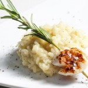
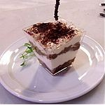

Risotti

El risotto (variación de riso, ‘arroz’ en italiano) es una comida
tradicional italiana realizada a base de arroz. Es uno de los modos
más comunes de cocinar arroz en Italia. Es una comida originaria de
la zona noroeste del país, concretamente del este de Piamonte, el oeste
de Lombardía y de la zona de Verona, debido a la abundancia de arroz.
Es uno de los pilares de la gastronomía norteña en general. El queso
(usualmente parmesano) suele configurar habitualmente la seña
característica del plato.
Corresponden a los platos que incluyen arroz (Risotti) son todos ellos
procedentes del norte de Italia de la Lombardía y de la región de Venecia.
Tiramisu

El tiramisú (del italiano tiramisù) es un postre frío
de cuchara que se monta en capas. No existe una receta
única de elaboración, sino variantes a partir de una serie
de ingredientes base que pueden ser representados por distintos
productos.
Un tiramisú se compone siempre de un ingrediente sólido humedecido
en café, sobre el que se superpone (de forma alterna o no) una crema
cuya base sonhuevos batidos con azúcar; se presenta espolvoreado con
cacao en polvo.
Partiendo de estos elementos básicos, es posible realizar diferentes
versiones del postre utilizando distintos representantes de los mismos
y añadiendo otros ingredientes.
• El ingrediente sólido y seco pueden ser galletas, bizcochos, Savoiardi, etc.
• Los huevos pueden ser separados en yemas y claras, batiéndose independientemente
(las claras a punto de nieve). Hoy en día es muy habitual añadirle a los huevos
nata montada o queso fresco.
• El queso que se suele utilizar en el tiramisú es el Mascarpone (por su
dulzor y consistencia natosa); no obstante, cualquier queso fresco (sin
sabor marcado) que, una vez batido, pueda convertirse en una crema es
igualmente indicado.
• Al café (en principio, café solo), se le puede añadir Amaretto O algún
otro tipo de licor para aromatizarlo y reforzar el sabor.
• Por último, es habitual espolvorear el postre con cacao en polvo para
provocar sensación de contraste con el dulce y para reforzar el regusto
a café.
Compuesto normalmente a base de capas alternas de bizcocho y crema,
se deja asentar durante unas horas en el frigorífico antes de ser servido.
Gelato
El gelato (en italiano ‘helado’, plural gelati) es la variante
regional italiana del helado. Como tal, se elabora con los mismos
ingredientes que la mayoría del resto de postres lácteos congelados:
leche, nata, varios azúcares y aromas, incluyendofrutas y frutos secos.
Cuando incorpora otros ingredientes, éstos se añaden tras la congelación
del gelato.
El gelato difiere del resto de helados en tener un menor contenido de
grasa butírica, típicamente del 4 al 8% (se le añadeleche desnatada como
sólido). También suele ser bajo en azúcar, teniendo entre un 16 y un 22%,
estando esta cantidad cuidadosamente equilibrada con el agua para evitar
que ésta se hiele. Los tipos de azúcar empleados son la sacarosa y
ladextrosa, empleándose azúcar invertido para controlar el dulzor
del producto final.
Típicamente, el gelato y el sorbeteitaliano contienen una base
estabilizadora, que suele ser yema de huevo en los sabores basados
en crema amarilla, como el zabaione y el flan.
La mezcla de ingredientes suele hacerse en caliente, incluyendo
la pasteurización. La base blanca se calienta a 85°C, subiendo a
90°C en el caso del gelato de chocolate, que tradicionalmente se
hace a partir de cacao en polvo. La base de crema amarilla con yema
de huevo se calienta a 65°C. La mezcla para gelato necesita reposar
varias horas tras la pasteurización para que las proteínas de la leche
se hidraten o unan con el agua. Esta hidratación reduce el tamaño de
los cristales de hielo, resultando en una textura suave del producto final.
A diferencia del helado industrial de otros tipos, que se congela
en un refrigerador de funcionamiento continuo, el gelato se congela
muy rápidamente en pequeñas porciones individuales. El refrigerador
usado incorpora aire a la mezcla a medida que esta se hiela, hasta
suponer un 20 a 35% del total. Esto hace que el producto final sea
más denso y tenga un sabor más intenso, a costa de reducir su fecha
de caducidad. El gelato artesano de alta calidad mantiene su textura
(debida a los delicados cristales de hielo) y sabor óptimos solo unos
pocos días, incluso aunque se almacene cuidadosamente a la temperatura
adecuada. Por esto lasgelaterias suelen elaborar su propio helado en el
mismo local o cerca.